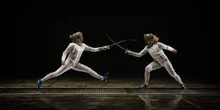

Durham Hall McCotter

I am an aspiring film producer, high school student, photographer, fencer, and advocate.

I built a lego set in two days, even though it said 6-12 years on it. I wear my glasses to sleep so my dreams aren't blurry. When I eat cereal I put in the cereal first, then the milk, then the bowl. I measure speed in freedom units per hotdog (fph). My eyelids are see-through. I once used one bird to defeat two rocks in an avalanche, in Egypt.